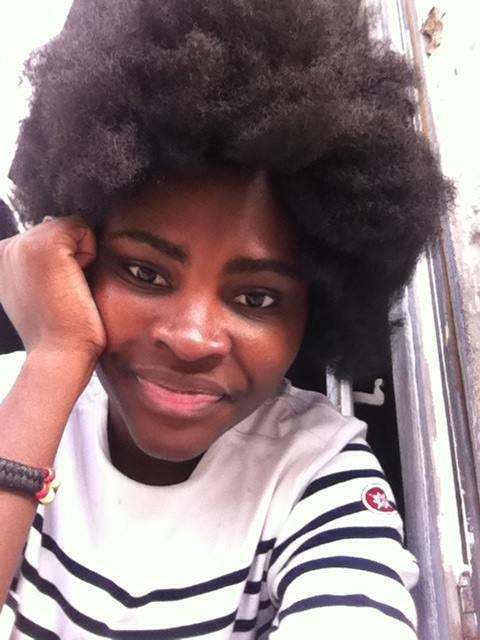

 Hello, je m'appelle Jackie et j'a toujous voulu changer le monde... comme tout le monde je crois hein. Mais avant cela, j'ai dabord voulu me retourner et regarder un peu en arriére, ce qui a été fait. Il est vrai qu'il reste encore beaucoup de chose à faire mais je pense qu'il faut souvent se poser, et regarder ce qui a été fait
Je savait pas ce que j'allais decouvrir en parcourant le net à la recherche d'information aussi minime soit-elle, sur ses femmes, qui auraient pu être mes maman, mes tantes, mes cousines, mes soeurs ou encoremes filles, cela me rapelle le verset de hebreu qui parle de la foi Ici J'y ai decouvert, de histoires poignantes, dure parfois à faire pleurer, mais j'y ai surtout vue de l'espoir, pour un demain meilleur, si je peux aller aller à l'université aujour'hui et m'assoir avec mes camarades blanc, faire mes courses sans avoir des regards noirs, m'assoir n'importe ou dans le bus, voter, aller à l'université, ou même simplement aller au toilette n'importe ou et bien d'autre encore... c'est parce que beaucoup ont fait un grand travail en amont , parfois en silence, parfois à haute voix, parfois en pleurs parfois avec douleurs, donc moi ausi je dois avoir de l'espoir pour un lendemain meilleur. Aujourd'hui n'est pas encore meilleur, mais c'est deja tellement mieux qu'avant alors, j'ai envie de dire merci à toutes ses femmes. Merci d'avoir existé.